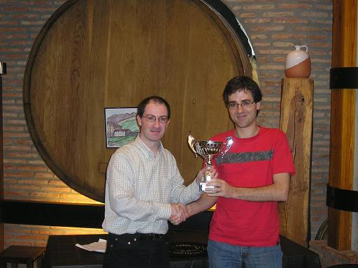

Aurten ere Tolosakoek
gonbidatu gaituzte San Juan festetako txapelketa parte hatzera.
Okasio honetan 10 talde parte hartu dute txapelketan eta ondorioz
txapelketa liga bat buelta batera izan da. Tolosaraino Iosu, Félix,
Tinin eta Aritz joan ziren klubaren ohorea defendatzera, eta beti
bezala aurkari nagusia Fomento izan da.

Erabakiorra izan behar zuen txandan Fomentoren kontra.
Gutxi gorabehera
parekatuta
joan zen elkarren kontra jokatu arte, eta kasu honetan denetarik pasa
zen, adibidez Iosuk ez zuen ikusi mate mugimendu batean kaptura
automatiko bat egiteagatik, hau dela eta 3,5-0,5 galdu zen eta
honezkero txapelketa erabakita. Azkenean bigarren sailkapenean, hori
bai bazkarian onenak bezalakoak gara.

Iosu saria jasotzen Ramon
Etxeberriaren eskutik.
Informazio gehiago Tolosako taldearen web orritik lor daiteke
http://www.euskalnet.net/tict/SanJoanSaria/2012/index.html
Argazki gehiago
http://www.flickr.com//photos/25221600@N04/sets/72157630262122884/show/